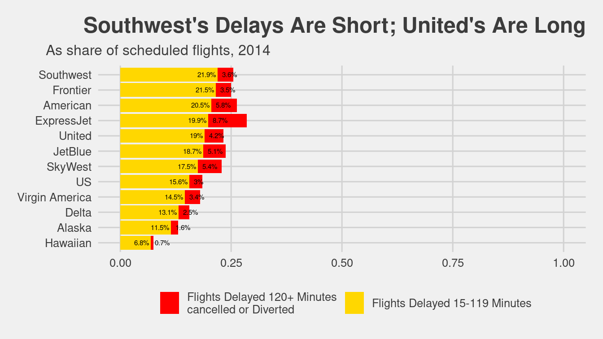

Chapter 15 Database querying using SQL
Thus far, most of the data that we have encountered in this book (such as the Lahman baseball data in Chapter 4) has been small—meaning that it will fit easily in a personal computer’s memory. In this chapter, we will explore approaches for working with data sets that are larger—let’s call them medium data. These data will fit on a personal computer’s hard disk, but not necessarily in its memory. Thankfully, a venerable solution for retrieving medium data from a database has been around since the 1970s: SQL (structured query language). Database management systems implementing SQL provide a ubiquitous architecture for storing and querying data that is relational in nature. While the death of SQL has been presaged many times, it continues to provide an effective solution for medium data. Its wide deployment makes it a “must-know” tool for data scientists. For those of you with bigger appetites, we will consider some extensions that move us closer to a true big data setting in Chapter 21.
15.1 From dplyr to SQL
Recall the airlines data that we encountered in Chapter 9.
Using the dplyr verbs that we developed in Chapters 4 and 5, consider retrieving the top on-time carriers with at least 100 flights arriving at JFK in September 2016.
If the data are stored in data frames called flights and carriers, then we might write a dplyr pipeline like this:
q <- flights %>%
filter(
year == 2016 & month == 9,
dest == "JFK"
) %>%
inner_join(carriers, by = c("carrier" = "carrier")) %>%
group_by(name) %>%
summarize(
N = n(),
pct_ontime = sum(arr_delay <= 15) / n()
) %>%
filter(N >= 100) %>%
arrange(desc(pct_ontime))
head(q, 4)# Source: lazy query [?? x 3]
# Database: mysql 5.7.33-log
# [@mdsr.cdc7tgkkqd0n.us-east-1.rds.amazonaws.com:/airlines]
# Ordered by: desc(pct_ontime)
name N pct_ontime
<chr> <dbl> <dbl>
1 Delta Air Lines Inc. 2396 0.869
2 Virgin America 347 0.833
3 JetBlue Airways 3463 0.817
4 American Airlines Inc. 1397 0.782However, the flights data frame can become very large. Going back to 1987, there are more than 169 million individual flights—each comprising a different row in this table.
These data occupy nearly 20 gigabytes as CSVs, and thus are problematic to store in a personal computer’s memory.
Instead, we write these data to disk, and use a querying language to access only those rows that interest us.
In this case, we configured dplyr to access the flights data on a MySQL server.
The dbConnect_scidb() function from the mdsr package provides a connection to the airlines database that lives on a remote MySQL server and stores it as the object db.
The tbl() function from dplyr maps the flights table in that airlines database to an object in R, in this case also called flights.
The same is done for the carriers table.
library(tidyverse)
library(mdsr)
db <- dbConnect_scidb("airlines")
flights <- tbl(db, "flights")
carriers <- tbl(db, "carriers")
Note that while we can use the flights and carriers objects as if they were data frames, they are not, in fact, data.frames. Rather, they have class tbl_MySQLConnection, and more generally, tbl_sql. A tbl is a special kind of object created by dplyr that behaves similarly to a data.frame.
class(flights)[1] "tbl_MySQLConnection" "tbl_dbi" "tbl_sql"
[4] "tbl_lazy" "tbl"
Note also that in the output of our pipeline above, there is an explicit mention of a MySQL database. We set up this database ahead of time (see Chapter 16 for instructions on doing this), but dplyr allows us to interact with these tbls as if they were data.frames in our R session. This is a powerful and convenient illusion!
What is actually happening is that dplyr translates our pipeline into SQL.
We can see the translation by passing the pipeline through the show_query() function using our previously created query.
show_query(q)<SQL>
SELECT *
FROM (SELECT `name`, COUNT(*) AS `N`, SUM(`arr_delay` <= 15.0) / COUNT(*) AS `pct_ontime`
FROM (SELECT `year`, `month`, `day`, `dep_time`, `sched_dep_time`, `dep_delay`, `arr_time`, `sched_arr_time`, `arr_delay`, `LHS`.`carrier` AS `carrier`, `tailnum`, `flight`, `origin`, `dest`, `air_time`, `distance`, `cancelled`, `diverted`, `hour`, `minute`, `time_hour`, `name`
FROM (SELECT *
FROM `flights`
WHERE ((`year` = 2016.0 AND `month` = 9.0) AND (`dest` = 'JFK'))) `LHS`
INNER JOIN `carriers` AS `RHS`
ON (`LHS`.`carrier` = `RHS`.`carrier`)
) `q01`
GROUP BY `name`) `q02`
WHERE (`N` >= 100.0)
ORDER BY `pct_ontime` DESC
Understanding this output is not important—the translator here is creating temporary tables with unintelligible names—but it should convince you that even though we wrote our pipeline in R, it was translated to SQL. dplyr will do this automatically any time you are working with objects of class tbl_sql. If we were to write an SQL query equivalent to our pipeline, we would write it in a more readable format:
SELECT
c.name,
SUM(1) AS N,
SUM(arr_delay <= 15) / SUM(1) AS pct_ontime
FROM flights AS f
JOIN carriers AS c ON f.carrier = c.carrier
WHERE year = 2016 AND month = 9
AND dest = 'JFK'
GROUP BY name
HAVING N >= 100
ORDER BY pct_ontime DESC
LIMIT 0,4;How did dplyr perform this translation?23 As we learn SQL, the parallels will become clear (e.g., the dplyr verb filter() corresponds to the SQL WHERE clause). But what about the formulas we put in our summarize() command? Notice that the R command n() was converted into ("COUNT(*) in SQL. This is not magic either: the translate_sql() function provides translation between R commands and SQL commands. For example, it will translate basic mathematical expressions.
library(dbplyr)
translate_sql(mean(arr_delay, na.rm = TRUE))<SQL> AVG(`arr_delay`) OVER ()However, it only recognizes a small set of the most common operations—it cannot magically translate any R function into SQL. It can be easily tricked. For example, if we make a copy of the very common R function paste0() (which concatenates strings) called my_paste(), that function is not translated.
my_paste <- paste0
translate_sql(my_paste("this", "is", "a", "string"))<SQL> my_paste('this', 'is', 'a', 'string')This is a good thing—since it allows you to pass arbitrary SQL code through. But you have to know what you are doing. Since there is no SQL function called my_paste(), this will throw an error, even though it is a perfectly valid R expression.
carriers %>%
mutate(name_code = my_paste(name, "(", carrier, ")"))Error in .local(conn, statement, ...): could not run statement: execute command denied to user 'mdsr_public'@'%' for routine 'airlines.my_paste'class(carriers)[1] "tbl_MySQLConnection" "tbl_dbi" "tbl_sql"
[4] "tbl_lazy" "tbl" Because carriers is a tbl_sql and not a data.frame, the MySQL server is actually doing the computations here. The dplyr pipeline is simply translated into SQL and submitted to the server. To make this work, we need to replace my_paste() with its MySQL equivalent command, which is CONCAT().
carriers %>%
mutate(name_code = CONCAT(name, "(", carrier, ")"))# Source: lazy query [?? x 3]
# Database: mysql 5.7.33-log
# [@mdsr.cdc7tgkkqd0n.us-east-1.rds.amazonaws.com:/airlines]
carrier name name_code
<chr> <chr> <chr>
1 02Q Titan Airways Titan Airways(02Q)
2 04Q Tradewind Aviation Tradewind Aviation(04Q)
3 05Q Comlux Aviation, AG Comlux Aviation, AG(05Q)
4 06Q Master Top Linhas Aereas Ltd. Master Top Linhas Aereas Ltd.(06Q)
5 07Q Flair Airlines Ltd. Flair Airlines Ltd.(07Q)
6 09Q Swift Air, LLC Swift Air, LLC(09Q)
7 0BQ DCA DCA(0BQ)
8 0CQ ACM AIR CHARTER GmbH ACM AIR CHARTER GmbH(0CQ)
9 0GQ Inter Island Airways, d/b/a I… Inter Island Airways, d/b/a Inter…
10 0HQ Polar Airlines de Mexico d/b/… Polar Airlines de Mexico d/b/a No…
# … with more rowsThe syntax of this looks a bit strange, since CONCAT() is not a valid R expression—but it works.
Another alternative is to pull the carriers data into R using the collect() function first, and then use my_paste() as before.24 The collect() function breaks the connection to the MySQL server and returns a data.frame (which is also a tbl_df).
carriers %>%
collect() %>%
mutate(name_code = my_paste(name, "(", carrier, ")"))# A tibble: 1,610 × 3
carrier name name_code
<chr> <chr> <chr>
1 02Q Titan Airways Titan Airways(02Q)
2 04Q Tradewind Aviation Tradewind Aviation(04Q)
3 05Q Comlux Aviation, AG Comlux Aviation, AG(05Q)
4 06Q Master Top Linhas Aereas Ltd. Master Top Linhas Aereas Ltd.(06Q)
5 07Q Flair Airlines Ltd. Flair Airlines Ltd.(07Q)
6 09Q Swift Air, LLC Swift Air, LLC(09Q)
7 0BQ DCA DCA(0BQ)
8 0CQ ACM AIR CHARTER GmbH ACM AIR CHARTER GmbH(0CQ)
9 0GQ Inter Island Airways, d/b/a I… Inter Island Airways, d/b/a Inter…
10 0HQ Polar Airlines de Mexico d/b/… Polar Airlines de Mexico d/b/a No…
# … with 1,600 more rowsThis example illustrates that when using dplyr with a tbl_sql backend, one must be careful to use expressions that SQL can understand. This is just one more reason why it is important to know SQL on its own and not rely entirely on the dplyr front-end (as wonderful as it is).
For querying a database, the choice of whether to use dplyr or SQL is largely a question of convenience. If you want to work with the result of your query in R, then use dplyr. If, on the other hand, you are pulling data into a web application, you likely have no alternative other than writing the SQL query yourself. dplyr is just one SQL client that only works in R, but there are SQL servers all over the world, in countless environments. Furthermore, as we will see in Chapter 21, even the big data tools that supersede SQL assume prior knowledge of SQL. Thus, in this chapter, we will learn how to write SQL queries.
15.2 Flat-file databases
It may be the case that all of the data that you have encountered thus far has been in a application-specific format (e.g., R, Minitab, SPSS, Stata or has taken the form of a single CSV (comma-separated value) file. This file consists of nothing more than rows and columns of data, usually with a header row providing names for each of the columns. Such a file is known as known as a flat file,
since it consists of just one flat (e.g., two-dimensional) file. A spreadsheet application—like Excel or Google Sheets—allows a user to open a flat file, edit it, and also provides a slew of features for generating additional columns, formatting cells, etc. In R, the read_csv() command from the
readr package converts a flat file database into a data.frame.
These flat-file databases are both extremely common and extremely useful, so why do we need anything else? One set of limitations comes from computer hardware. A personal computer has two main options for storing data:
- Memory (RAM): the amount of data that a computer can work on at once. Modern computers typically have a few gigabytes of memory. A computer can access data in memory extremely quickly (tens of GBs per second).
- Hard Disk: the amount of data that a computer can store permanently. Modern computers typically have hundreds or even thousands of gigabytes (terabytes) of storage space. However, accessing data on disk is orders of magnitude slower than accessing data in memory (hundreds of MBs per second).
Thus, there is a trade-off between storage space (disks have more room) and speed (memory is much faster to access). It is important to recognize that these are physical limitations—if you only have 4 Gb of RAM on your computer, you simply can’t read more than 4 Gb of data into memory.25
In general, all objects in your R workspace are stored in memory. Note that the carriers object that we created earlier occupies very little memory (since the data still lives on the SQL server), whereas collect(carriers) pulls the data into R and occupies much more memory.
You can find out how much memory an object occupies in R using the object.size() function and its print method.
carriers %>%
object.size() %>%
print(units = "Kb")3.6 Kbcarriers %>%
collect() %>%
object.size() %>%
print(units = "Kb")234.8 KbFor a typical R user, this means that it can be difficult or impossible to work with a data set stored as a data.frame that is larger than a few Gb. The following bit of code will illustrate that a data set of random numbers with 100 columns and 1 million rows occupies more than three-quarters of a Gb of memory on this computer.
n <- 100 * 1e6
x <- matrix(runif(n), ncol = 100)
dim(x)[1] 1000000 100print(object.size(x), units = "Mb")762.9 MbThus, by the time that data.frame reached 10 million rows, it would be problematic for most personal computers—probably making your machine sluggish and unresponsive—and it could never reach 100 million rows. But Google processes over 3.5 billion search queries per day! We know that they get stored somewhere—where do they all go?
To work effectively with larger data, we need a system that stores all of the data on disk, but allows us to access a portion of the data in memory easily. A relational database—which stores data in a collection of linkable tables—provides a powerful solution to this problem. While more sophisticated approaches are available to address big data challenges, databases are a venerable solution for medium data.
15.3 The SQL universe
SQL (Structured Query Language) is a programming language for relational database management systems. Originally developed in the 1970s, it is a mature, powerful, and widely used storage and retrieval solution for data of many sizes. Google, Facebook, Twitter, Reddit, LinkedIn, Instagram, and countless other companies all access large datastores using SQL.
Relational database management systems (RDBMS) are very efficient for data that is naturally broken into a series of tables that are linked together by keys. A table is a two-dimensional array of data that has records (rows) and fields (columns). It is very much like a data.frame in R, but there are some important differences that make SQL more efficient under certain conditions.
The theoretical foundation for SQL is based on relational algebra and tuple relational calculus. These ideas were developed by mathematicians and computer scientists, and while they are not required knowledge for our purposes, they help to solidify SQL’s standing as a data storage and retrieval system.
SQL has been an American National Standards Institute (ANSI) standard since 1986, but that standard is only loosely followed by its implementing developers. Unfortunately, this means that there are many different dialects of SQL, and translating between them is not always trivial. However, the broad strokes of the SQL language are common to all, and by learning one dialect, you will be able to easily understand any other (Kline et al. 2008).
Major implementations of SQL include:
- Oracle: corporation that claims #1 market share by revenue—now owns MySQL.
- Microsoft SQL Server: another widespread corporate SQL product.
- SQLite: a lightweight, open-source version of SQL that has recently become the most widely used implementation of SQL, in part due to its being embedded in Android, the world’s most popular mobile operating system. SQLite is an excellent choice for relatively simple applications—like storing data associated with a particular mobile app—but has neither the features nor the scalability for persistent, multi-user, multi-purpose applications.
- MySQL: the most popular client-server RDBMS. It is open source, but is now owned by Oracle Corporation, and that has caused some tension in the open-source community. One of the original developers of MySQL, Monty Widenius, now maintains MariaDB as a community fork. MySQL is used by Facebook, Google, LinkedIn, and Twitter.
- PostgreSQL: a feature-rich, standards-compliant, open-source implementation growing in popularity. PostgreSQL hews closer to the ANSI standard than MySQL, supports more functions and data types, and provides powerful procedural languages that can extend its base functionality. It is used by Reddit and Instagram, among others.
- MonetDB and MonetDBLite: open-source implementations that are column-based, rather than the traditional row-based systems. Column-based RDBMSs scale better for big data. MonetDBLite is an R package that provides a local experience similar to SQLite.
- Vertica: a commercial column-based implementation founded by Postgres originator Michael Stonebraker and now owned by Hewlett-Packard.
We will focus on MySQL, but most aspects are similar in PostgreSQL or SQLite (see Appendix F for setup instructions).
15.4 The SQL data manipulation language
MySQL is based on a client-server model. This means that there is a database server that stores the data and executes queries. It can be located on the user’s local computer or on a remote server. We will be connecting to a server hosted by Amazon Web Services. To retrieve data from the server, one can connect to it via any number of client programs. One can of course use the command-line mysql program, or the official GUI application: MySQL Workbench. While we encourage the reader to explore both options—we most often use the Workbench for MySQL development—the output you will see in this presentation comes directly from the MySQL command line client.
Even though dplyr enables one to execute most queries using R syntax, and without even worrying so much where the data are stored, learning SQL is valuable in its own right due to its ubiquity.
If you are just learning SQL for the first time, use the command-line client and/or one of the GUI applications. The former provides the most direct feedback, and the latter will provide lots of helpful information.
Information about setting up a MySQL database can be found in Appendix F: we assume that this has been done on a local or remote machine. In what follows, you will see SQL commands and their results in tables. To run these on your computer, please see Section F.4 for information about connecting to a MySQL server.
As noted in Chapter 1, the airlines package streamlines construction an SQL database containing over 169 million flights. These data come directly from the United States Bureau of Transportation Statistics. We access a remote SQL database that we have already set up and populated using the airlines package. Note that this database is relational and consists of multiple tables.
SHOW TABLES;| Tables_in_airlines |
|---|
| airports |
| carriers |
| flights |
| planes |
Note that every SQL statement must end with a semicolon. To see what columns are present in the airports table, we ask for a description.
DESCRIBE airports;| Field | Type | Null | Key | Default | Extra |
|---|---|---|---|---|---|
| faa | varchar(3) | NO | PRI | ||
| name | varchar(255) | YES | NA | ||
| lat | decimal(10,7) | YES | NA | ||
| lon | decimal(10,7) | YES | NA | ||
| alt | int(11) | YES | NA | ||
| tz | smallint(4) | YES | NA | ||
| dst | char(1) | YES | NA | ||
| city | varchar(255) | YES | NA | ||
| country | varchar(255) | YES | NA |
This command tells us the names of the field (or variables) in the table, as well as their data type, and what kind of keys might be present (we will learn more about keys in Chapter 16).
Next, we want to build a query. Queries in SQL start with the SELECT keyword and consist of several clauses, which have to be written in this order:
SELECTallows you to list the columns, or functions operating on columns, that you want to retrieve. This is an analogous operation to theselect()verb in dplyr, potentially combined withmutate().FROMspecifies the table where the data are.JOINallows you to stitch together two or more tables using a key. This is analogous to theinner_join()andleft_join()commands in dplyr.WHEREallows you to filter the records according to some criteria. This is an analogous operation to thefilter()verb in dplyr.GROUP BYallows you to aggregate the records according to some shared value. This is an analogous operation to thegroup_by()verb in dplyr.HAVINGis like aWHEREclause that operates on the result set—not the records themselves. This is analogous to applying a secondfilter()command in dplyr, after the rows have already been aggregated.ORDER BYis exactly what it sounds like—it specifies a condition for ordering the rows of the result set. This is analogous to thearrange()verb in dplyr.LIMITrestricts the number of rows in the output. This is similar to the R commandshead()andslice().
Only the SELECT and FROM clauses are required. Thus, the simplest query one can write is:
SELECT * FROM flights;DO NOT EXECUTE THIS QUERY! This will cause all 169 million records to be dumped! This will not only crash your machine, but also tie up the server for everyone else!
A safe query is:
SELECT * FROM flights LIMIT 0,10;We can specify a subset of variables to be displayed. Table 15.1 displays the results, limited to the specified fields and the first 10 records.
SELECT year, month, day, dep_time, sched_dep_time, dep_delay, origin
FROM flights
LIMIT 0, 10;| year | month | day | dep_time | sched_dep_time | dep_delay | origin |
|---|---|---|---|---|---|---|
| 2010 | 10 | 1 | 1 | 2100 | 181 | EWR |
| 2010 | 10 | 1 | 1 | 1920 | 281 | FLL |
| 2010 | 10 | 1 | 3 | 2355 | 8 | JFK |
| 2010 | 10 | 1 | 5 | 2200 | 125 | IAD |
| 2010 | 10 | 1 | 7 | 2245 | 82 | LAX |
| 2010 | 10 | 1 | 7 | 10 | -3 | LAX |
| 2010 | 10 | 1 | 7 | 2150 | 137 | ATL |
| 2010 | 10 | 1 | 8 | 15 | -7 | SMF |
| 2010 | 10 | 1 | 8 | 10 | -2 | LAS |
| 2010 | 10 | 1 | 10 | 2225 | 105 | SJC |
The astute reader will recognize the similarities between the five idioms for single table analysis and the join operations discussed in Chapters 4 and 5 and the SQL syntax. This is not a coincidence! In the contrary, dplyr represents a concerted effort to bring the almost natural language SQL syntax to R. For this book, we have presented the R syntax first, since much of our content is predicated on the basic data wrangling skills developed previously. But historically, SQL predated the dplyr by decades. In Table 15.2, we illustrate the functional equivalence of SQL and dplyr commands.
(ref:filter-sql) SELECT col1, col2 FROM a WHERE col3 = 'x'
(ref:filter-r) a %>% filter(col3 == 'x') %>% select(col1, col2)
(ref:aggregate-sql) SELECT id, SUM(col1) FROM a GROUP BY id
(ref:aggregate-r) a %>% group_by(id) %>% summarize(SUM(col1))
(ref:join-sql) SELECT * FROM a JOIN b ON a.id = b.id
(ref:join-r) a %>% inner_join(b, by = c('id' = 'id'))
| Concept | SQL | R |
|---|---|---|
| Filter by rows & columns | (ref:filter-sql) | (ref:filter-r) |
| Aggregate by rows | (ref:aggregate-sql) | (ref:aggregate-r) |
| Combine two tables | (ref:join-sql) | (ref:join-r) |
15.4.1 SELECT...FROM
As noted above, every SQL SELECT query must contain SELECT and FROM.
The analyst may specify columns to be retrieved. We saw above that the airports table contains seven columns. If we only wanted to retrieve the FAA code and name of each airport, we could write the following query.
SELECT faa, name FROM airports;| faa | name |
|---|---|
| 04G | Lansdowne Airport |
| 06A | Moton Field Municipal Airport |
| 06C | Schaumburg Regional |
In addition to columns that are present in the database, one can retrieve columns that are functions of other columns. For example, if we wanted to return the geographic coordinates of each airport as an \((x,y)\) pair, we could combine those fields.
SELECT
name,
CONCAT('(', lat, ', ', lon, ')')
FROM airports
LIMIT 0, 6;| name | CONCAT(‘(,’ lat, ‘,’ lon, ‘)’) |
|---|---|
| Lansdowne Airport | (41.1304722, -80.6195833) |
| Moton Field Municipal Airport | (32.4605722, -85.6800278) |
| Schaumburg Regional | (41.9893408, -88.1012428) |
| Randall Airport | (41.4319120, -74.3915611) |
| Jekyll Island Airport | (31.0744722, -81.4277778) |
| Elizabethton Municipal Airport | (36.3712222, -82.1734167) |
Note that the column header for the derived column above is ungainly, since it consists of the entire formula that we used to construct it!
This is difficult to read, and would be cumbersome to work with.
An easy fix is to give this derived column an alias. We can do this using the keyword AS.
SELECT
name,
CONCAT('(', lat, ', ', lon, ')') AS coords
FROM airports
LIMIT 0, 6;| name | coords |
|---|---|
| Lansdowne Airport | (41.1304722, -80.6195833) |
| Moton Field Municipal Airport | (32.4605722, -85.6800278) |
| Schaumburg Regional | (41.9893408, -88.1012428) |
| Randall Airport | (41.4319120, -74.3915611) |
| Jekyll Island Airport | (31.0744722, -81.4277778) |
| Elizabethton Municipal Airport | (36.3712222, -82.1734167) |
We can also use AS to refer to a column in the table by a different name in the result set.
SELECT
name AS airport_name,
CONCAT('(', lat, ', ', lon, ')') AS coords
FROM airports
LIMIT 0, 6;| airport_name | coords |
|---|---|
| Lansdowne Airport | (41.1304722, -80.6195833) |
| Moton Field Municipal Airport | (32.4605722, -85.6800278) |
| Schaumburg Regional | (41.9893408, -88.1012428) |
| Randall Airport | (41.4319120, -74.3915611) |
| Jekyll Island Airport | (31.0744722, -81.4277778) |
| Elizabethton Municipal Airport | (36.3712222, -82.1734167) |
This brings an important distinction to the fore: In SQL, it is crucial to distinguish between clauses that operate on the rows of the original table versus those that operate on the rows of the result set.
Here, name, lat, and lon are columns in the original table—they are written to the disk on the SQL server.
On the other hand, airport_name and coords exist only in the result set—which is passed from the server to the client and is not written to the disk.
The preceding examples show the SQL equivalents of the dplyr commands select(), mutate(), and rename().
15.4.2 WHERE
The WHERE clause is analogous to the filter() command in dplyr—it allows you to restrict the set of rows that are retrieved to only those rows that match a certain condition.
Thus, while there are several million rows in the flights table in each year—each corresponding to a single flight—there were only a few dozen flights that left Bradley International Airport on June 26th, 2013.
SELECT
year, month, day, origin, dest,
flight, carrier
FROM flights
WHERE year = 2013 AND month = 6 AND day = 26
AND origin = 'BDL'
LIMIT 0, 6;| year | month | day | origin | dest | flight | carrier |
|---|---|---|---|---|---|---|
| 2013 | 6 | 26 | BDL | EWR | 4714 | EV |
| 2013 | 6 | 26 | BDL | MIA | 2015 | AA |
| 2013 | 6 | 26 | BDL | DTW | 1644 | DL |
| 2013 | 6 | 26 | BDL | BWI | 2584 | WN |
| 2013 | 6 | 26 | BDL | ATL | 1065 | DL |
| 2013 | 6 | 26 | BDL | DCA | 1077 | US |
It would be convenient to search for flights in a date range.
Unfortunately, there is no date field in this table—but rather separate columns for the year, month, and day.
Nevertheless, we can tell SQL to interpret these columns as a date, using the STR_TO_DATE() function.26 Unlike in R code, function names in SQL code are customarily capitalized.
Dates and times can be challenging to wrangle.
To learn more about these date tokens, see the MySQL documentation for STR_TO_DATE().
SELECT
STR_TO_DATE(CONCAT(year, '-', month, '-', day), '%Y-%m-%d') AS theDate,
origin,
flight, carrier
FROM flights
WHERE year = 2013 AND month = 6 AND day = 26
AND origin = 'BDL'
LIMIT 0, 6;| theDate | origin | flight | carrier |
|---|---|---|---|
| 2013-06-26 | BDL | 4714 | EV |
| 2013-06-26 | BDL | 2015 | AA |
| 2013-06-26 | BDL | 1644 | DL |
| 2013-06-26 | BDL | 2584 | WN |
| 2013-06-26 | BDL | 1065 | DL |
| 2013-06-26 | BDL | 1077 | US |
Note that here we have used a WHERE clause on columns that are not present in the result set. We can do this because WHERE operates only on the rows of the original table.
Conversely, if we were to try and use a WHERE clause on theDate, it would not work, because (as the error suggests), theDate is not the name of a column in the flights table.
SELECT
STR_TO_DATE(CONCAT(year, '-', month, '-', day), '%Y-%m-%d') AS theDate,
origin, flight, carrier
FROM flights
WHERE theDate = '2013-06-26'
AND origin = 'BDL'
LIMIT 0, 6;ERROR 1049 (42000): Unknown database 'airlines'A workaround is to copy and paste the definition of theDate into the WHERE clause, since WHERE can operate on functions of columns in the original table (results not shown).
SELECT
STR_TO_DATE(CONCAT(year, '-', month, '-', day), '%Y-%m-%d') AS theDate,
origin, flight, carrier
FROM flights
WHERE STR_TO_DATE(CONCAT(year, '-', month, '-', day), '%Y-%m-%d') =
'2013-06-26'
AND origin = 'BDL'
LIMIT 0, 6;
This query will work, but here we have stumbled onto another wrinkle that exposes subtleties in how SQL executes queries.
The previous query was able to make use of indices defined on the year, month, and day columns.
However, the latter query is not able to make use of these indices because it is trying to filter on functions of a combination of those columns.
This makes the latter query very slow.
We will return to a fuller discussion of indices in Section 16.1.
Finally, we can use the BETWEEN syntax to filter through a range of dates.
The DISTINCT keyword limits the result set to one row per unique value of theDate.
SELECT
DISTINCT STR_TO_DATE(CONCAT(year, '-', month, '-', day), '%Y-%m-%d')
AS theDate
FROM flights
WHERE year = 2013 AND month = 6 AND day BETWEEN 26 and 30
AND origin = 'BDL'
LIMIT 0, 6;| theDate |
|---|
| 2013-06-26 |
| 2013-06-27 |
| 2013-06-28 |
| 2013-06-29 |
| 2013-06-30 |
Similarly, we can use the IN syntax to search for items in a specified list.
Note that flights on the 27th, 28th, and 29th of June are retrieved in the query using BETWEEN but not in the query using IN.
SELECT
DISTINCT STR_TO_DATE(CONCAT(year, '-', month, '-', day), '%Y-%m-%d')
AS theDate
FROM flights
WHERE year = 2013 AND month = 6 AND day IN (26, 30)
AND origin = 'BDL'
LIMIT 0, 6;| theDate |
|---|
| 2013-06-26 |
| 2013-06-30 |
SQL also supports OR clauses in addition to AND clauses, but one must always be careful with parentheses when using OR. Note the difference in the numbers of rows returned by the following two queries (557,874 vs. 2,542). The COUNT function simply counts the number of rows. The criteria in the WHERE clause are not evaluated left to right, but rather the ANDs are evaluated first. This means that in the first query below, all flights on the 26th day of any month, regardless of year or month, would be returned.
/* returns 557,874 records */
SELECT
COUNT(*) AS N
FROM flights
WHERE year = 2013 AND month = 6 OR day = 26
AND origin = 'BDL';/* returns 2,542 records */
SELECT
COUNT(*) AS N
FROM flights
WHERE year = 2013 AND (month = 6 OR day = 26)
AND origin = 'BDL';15.4.3 GROUP BY
The GROUP BY clause allows one to aggregate multiple rows according to some criteria.
The challenge when using GROUP BY is specifying how multiple rows of data should be reduced into a single value. Aggregate functions (e.g., COUNT(), SUM(), MAX(), and AVG()) are necessary.
We know that there were 65 flights that left Bradley Airport on June 26th, 2013, but how many belonged to each airline carrier? To get this information we need to aggregate the individual flights, based on who the carrier was.
SELECT
carrier,
COUNT(*) AS numFlights,
SUM(1) AS numFlightsAlso
FROM flights
WHERE year = 2013 AND month = 6 AND day = 26
AND origin = 'BDL'
GROUP BY carrier;| carrier | numFlights | numFlightsAlso |
|---|---|---|
| 9E | 5 | 5 |
| AA | 4 | 4 |
| B6 | 5 | 5 |
| DL | 11 | 11 |
| EV | 5 | 5 |
| MQ | 5 | 5 |
| UA | 1 | 1 |
| US | 7 | 7 |
| WN | 19 | 19 |
| YV | 3 | 3 |
For each of these airlines, which flight left the earliest in the morning?
SELECT
carrier,
COUNT(*) AS numFlights,
MIN(dep_time)
FROM flights
WHERE year = 2013 AND month = 6 AND day = 26
AND origin = 'BDL'
GROUP BY carrier;| carrier | numFlights | MIN(dep_time) |
|---|---|---|
| 9E | 5 | 0 |
| AA | 4 | 559 |
| B6 | 5 | 719 |
| DL | 11 | 559 |
| EV | 5 | 555 |
| MQ | 5 | 0 |
| UA | 1 | 0 |
| US | 7 | 618 |
| WN | 19 | 601 |
| YV | 3 | 0 |
This is a bit tricky to figure out because the dep_time variable is stored as an integer, but would be better represented as a time data type.
If it is a three-digit integer, then the first digit is the hour, but if it is a four-digit integer, then the first two digits are the hour.
In either case, the last two digits are the minutes, and there are no seconds recorded.
The MAKETIME() function combined with the IF(condition, value if true, value if false) statement can help us with this.
SELECT
carrier,
COUNT(*) AS numFlights,
MAKETIME(
IF(LENGTH(MIN(dep_time)) = 3,
LEFT(MIN(dep_time), 1),
LEFT(MIN(dep_time), 2)
),
RIGHT(MIN(dep_time), 2),
0
) AS firstDepartureTime
FROM flights
WHERE year = 2013 AND month = 6 AND day = 26
AND origin = 'BDL'
GROUP BY carrier
LIMIT 0, 6;| carrier | numFlights | firstDepartureTime |
|---|---|---|
| 9E | 5 | 00:00:00 |
| AA | 4 | 05:59:00 |
| B6 | 5 | 07:19:00 |
| DL | 11 | 05:59:00 |
| EV | 5 | 05:55:00 |
| MQ | 5 | 00:00:00 |
We can also group by more than one column, but need to be careful to specify that we apply an aggregate function to each column that we are not grouping by.
In this case, every time we access dep_time, we apply the MIN() function, since there may be many different values of dep_time associated with each unique combination of carrier and dest.
Applying the MIN() function returns the smallest such value unambiguously.
SELECT
carrier, dest,
COUNT(*) AS numFlights,
MAKETIME(
IF(LENGTH(MIN(dep_time)) = 3,
LEFT(MIN(dep_time), 1),
LEFT(MIN(dep_time), 2)
),
RIGHT(MIN(dep_time), 2),
0
) AS firstDepartureTime
FROM flights
WHERE year = 2013 AND month = 6 AND day = 26
AND origin = 'BDL'
GROUP BY carrier, dest
LIMIT 0, 6;| carrier | dest | numFlights | firstDepartureTime |
|---|---|---|---|
| 9E | CVG | 2 | 00:00:00 |
| 9E | DTW | 1 | 18:20:00 |
| 9E | MSP | 1 | 11:25:00 |
| 9E | RDU | 1 | 09:38:00 |
| AA | DFW | 3 | 07:04:00 |
| AA | MIA | 1 | 05:59:00 |
15.4.4 ORDER BY
The use of aggregate function allows us to answer some very basic exploratory questions.
Combining this with an ORDER BY clause will bring the most interesting results to the top.
For example, which destinations are most common from Bradley in 2013?
SELECT
dest, SUM(1) AS numFlights
FROM flights
WHERE year = 2013
AND origin = 'BDL'
GROUP BY dest
ORDER BY numFlights DESC
LIMIT 0, 6;| dest | numFlights |
|---|---|
| ORD | 2657 |
| BWI | 2613 |
| ATL | 2277 |
| CLT | 1842 |
| MCO | 1789 |
| DTW | 1523 |
Note that since the ORDER BY clause cannot be executed until all of the data are retrieved, it operates on the result set, and not the rows of the original data.
Thus, derived columns can be referenced in the ORDER BY clause.
Which of those destinations had the lowest average arrival delay time?
SELECT
dest, SUM(1) AS numFlights,
AVG(arr_delay) AS avg_arr_delay
FROM flights
WHERE year = 2013
AND origin = 'BDL'
GROUP BY dest
ORDER BY avg_arr_delay ASC
LIMIT 0, 6;| dest | numFlights | avg_arr_delay |
|---|---|---|
| CLE | 57 | -13.07 |
| LAX | 127 | -10.31 |
| CVG | 708 | -7.37 |
| MSP | 981 | -3.66 |
| MIA | 404 | -3.27 |
| DCA | 204 | -2.90 |
Cleveland Hopkins International Airport (CLE) has the smallest average arrival delay time.
15.4.5 HAVING
Although flights to Cleveland had the lowest average arrival delay—more than 13 minutes ahead of schedule—there were only 57 flights that went to from Bradley to Cleveland in all of 2013.
It probably makes more sense to consider only those destinations that had, say, at least two flights per day.
We can filter our result set using a HAVING clause.
SELECT
dest, SUM(1) AS numFlights,
AVG(arr_delay) AS avg_arr_delay
FROM flights
WHERE year = 2013
AND origin = 'BDL'
GROUP BY dest
HAVING numFlights > 365 * 2
ORDER BY avg_arr_delay ASC
LIMIT 0, 6;| dest | numFlights | avg_arr_delay |
|---|---|---|
| MSP | 981 | -3.664 |
| DTW | 1523 | -2.148 |
| CLT | 1842 | -0.120 |
| FLL | 1011 | 0.277 |
| DFW | 1062 | 0.750 |
| ATL | 2277 | 4.470 |
We can see now that among the airports that are common destinations from Bradley, Minneapolis-St. Paul has the lowest average arrival delay time, at nearly 4 minutes ahead of schedule, on average.
Note that MySQL and SQLite support the use of derived column aliases in HAVING clauses, but PostgreSQL does not.
It is important to understand that the HAVING clause operates on the result set.
While WHERE and HAVING are similar in spirit and syntax (and indeed, in dplyr they are both masked by the filter() function), they are different, because WHERE operates on the original data in the table and HAVING operates on the result set. Moving the HAVING condition to the WHERE clause will not work.
SELECT
dest, SUM(1) AS numFlights,
AVG(arr_delay) AS avg_arr_delay
FROM flights
WHERE year = 2013
AND origin = 'BDL'
AND numFlights > 365 * 2
GROUP BY dest
ORDER BY avg_arr_delay ASC
LIMIT 0, 6;ERROR 1049 (42000): Unknown database 'airlines'On the other hand, moving the WHERE conditions to the HAVING clause will work, but could result in a major loss of efficiency.
The following query will return the same result as the one we considered previously.
SELECT
origin, dest, SUM(1) AS numFlights,
AVG(arr_delay) AS avg_arr_delay
FROM flights
WHERE year = 2013
GROUP BY origin, dest
HAVING numFlights > 365 * 2
AND origin = 'BDL'
ORDER BY avg_arr_delay ASC
LIMIT 0, 6;Moving the origin = 'BDL' condition to the HAVING clause means that all airport destinations had to be considered.
With this condition in the WHERE clause, the server can quickly identify only those flights that left Bradley, perform the aggregation, and then filter this relatively small result set for those entries with a sufficient number of flights.
Conversely, with this condition in the HAVING clause, the server is forced to consider all 3 million flights from 2013, perform the aggregation for all pairs of airports, and then filter this much larger result set for those entries with a sufficient number of flights from Bradley.
The filtering of the result set is not importantly slower, but the aggregation over 3 million rows as opposed to a few thousand is.
To maximize query efficiency, put conditions in a WHERE clause as opposed to a HAVING clause whenever possible.
15.4.6 LIMIT
A LIMIT clause simply allows you to truncate the output to a specified number of rows.
This achieves an effect analogous to the R commands head() or slice().
SELECT
dest, SUM(1) AS numFlights,
AVG(arr_delay) AS avg_arr_delay
FROM flights
WHERE year = 2013
AND origin = 'BDL'
GROUP BY dest
HAVING numFlights > 365*2
ORDER BY avg_arr_delay ASC
LIMIT 0, 6;| dest | numFlights | avg_arr_delay |
|---|---|---|
| MSP | 981 | -3.664 |
| DTW | 1523 | -2.148 |
| CLT | 1842 | -0.120 |
| FLL | 1011 | 0.277 |
| DFW | 1062 | 0.750 |
| ATL | 2277 | 4.470 |
Note, however, that it is also possible to retrieve rows not at the beginning.
The first number in the LIMIT clause indicates the number of rows to skip, and the latter indicates the number of rows to retrieve.
Thus, this query will return the 4th–7th airports in the previous list.
SELECT
dest, SUM(1) AS numFlights,
AVG(arr_delay) AS avg_arr_delay
FROM flights
WHERE year = 2013
AND origin = 'BDL'
GROUP BY dest
HAVING numFlights > 365*2
ORDER BY avg_arr_delay ASC
LIMIT 3,4;| dest | numFlights | avg_arr_delay |
|---|---|---|
| FLL | 1011 | 0.277 |
| DFW | 1062 | 0.750 |
| ATL | 2277 | 4.470 |
| BWI | 2613 | 5.032 |
15.4.7 JOIN
In Chapter 5, we presented several dplyr join operators: inner_join() and left_join().
Other functions (e.g., semi_join()) are also available.
As you might expect, these operations are fundamental to SQL—and moreover, the success of the RDBMS paradigm is predicated on the ability to efficiently join tables together.
Recall that SQL is a relational database management system—the relations between the tables allow you to write queries that efficiently tie together information from multiple sources.
The syntax for performing these operations in SQL requires the JOIN keyword.
In general, there are four pieces of information that you need to specify in order to join two tables:
- The name of the first table that you want to join
- (optional) The type of join that you want to use
- The name of the second table that you want to join
- The condition(s) under which you want the records in the first table to match the records in the second table
There are many possible permutations of how two tables can be joined, and in many cases, a single query may involve several or even dozens of tables.
In practice, the JOIN syntax varies among SQL implementations.
In MySQL, OUTER JOINs are not available, but the following join types are:
JOIN: includes all of the rows that are present in both tables and match.LEFT JOIN: includes all of the rows that are present in the first table. Rows in the first table that have no match in the second are filled withNULLs.RIGHT JOIN: include all of the rows that are present in the second table. This is the opposite of aLEFT JOIN.CROSS JOIN: the Cartesian product of the two tables. Thus, all possible combinations of rows matching the joining condition are returned.
Recall that in the flights table, the origin and destination of each flight are recorded.
SELECT
origin, dest,
flight, carrier
FROM flights
WHERE year = 2013 AND month = 6 AND day = 26
AND origin = 'BDL'
LIMIT 0, 6;| origin | dest | flight | carrier |
|---|---|---|---|
| BDL | EWR | 4714 | EV |
| BDL | MIA | 2015 | AA |
| BDL | DTW | 1644 | DL |
| BDL | BWI | 2584 | WN |
| BDL | ATL | 1065 | DL |
| BDL | DCA | 1077 | US |
Note that the flights table contains only the three-character FAA airport codes for both airports—not the full name of the airport.
These cryptic abbreviations are not easily understood by humans.
Which airport is EWR?
Wouldn’t it be more convenient to have the airport name in the table?
It would be more convenient, but it would also be significantly less efficient from a storage and retrieval point of view, as well as more problematic from a database integrity point of view.
The solution is to store information about airports in the airports table, along with these cryptic codes—which we will now call keys—and to only store these keys in the flights table—which is about flights, not airports.
However, we can use these keys to join the two tables together in our query.
In this manner, we can have our cake and eat it too: The data are stored in separate tables for efficiency, but we can still have the full names in the result set if we choose.
Note how once again, the distinction between the rows of the original table and the result set is critical.
To write our query, we simply have to specify the table we want to join onto flights (e.g., airports) and the condition by which we want to match rows in flights with rows in airports.
In this case, we want the airport code listed in flights.dest to be matched to the airport code in airports.faa.
We need to specify that we want to see the name column from the airports table in the result set (see Table 15.3).
SELECT
origin, dest,
airports.name AS dest_name,
flight, carrier
FROM flights
JOIN airports ON flights.dest = airports.faa
WHERE year = 2013 AND month = 6 AND day = 26
AND origin = 'BDL'
LIMIT 0, 6;| origin | dest | dest_name | flight | carrier |
|---|---|---|---|---|
| BDL | EWR | Newark Liberty Intl | 4714 | EV |
| BDL | MIA | Miami Intl | 2015 | AA |
| BDL | DTW | Detroit Metro Wayne Co | 1644 | DL |
| BDL | BWI | Baltimore Washington Intl | 2584 | WN |
| BDL | ATL | Hartsfield Jackson Atlanta Intl | 1065 | DL |
| BDL | DCA | Ronald Reagan Washington Natl | 1077 | US |
This is much easier to read for humans.
One quick improvement to the readability of this query is to use table aliases.
This will save us some typing now, but a considerable amount later on.
A table alias is often just a single letter after the reserved word AS in the specification of each table in the FROM and JOIN clauses.
Note that these aliases can be referenced anywhere else in the query (see Table 15.4).
SELECT
origin, dest,
a.name AS dest_name,
flight, carrier
FROM flights AS o
JOIN airports AS a ON o.dest = a.faa
WHERE year = 2013 AND month = 6 AND day = 26
AND origin = 'BDL'
LIMIT 0, 6;| origin | dest | dest_name | flight | carrier |
|---|---|---|---|---|
| BDL | EWR | Newark Liberty Intl | 4714 | EV |
| BDL | MIA | Miami Intl | 2015 | AA |
| BDL | DTW | Detroit Metro Wayne Co | 1644 | DL |
| BDL | BWI | Baltimore Washington Intl | 2584 | WN |
| BDL | ATL | Hartsfield Jackson Atlanta Intl | 1065 | DL |
| BDL | DCA | Ronald Reagan Washington Natl | 1077 | US |
In the same manner, there are cryptic codes in flights for the airline carriers.
The full name of each carrier is stored in the carriers table, since that is the place where information about carriers are stored.
We can join this table to our result set to retrieve the name of each carrier (see Table 15.5).
SELECT
dest, a.name AS dest_name,
o.carrier, c.name AS carrier_name
FROM flights AS o
JOIN airports AS a ON o.dest = a.faa
JOIN carriers AS c ON o.carrier = c.carrier
WHERE year = 2013 AND month = 6 AND day = 26
AND origin = 'BDL'
LIMIT 0, 6;| dest | dest_name | carrier | carrier_name |
|---|---|---|---|
| EWR | Newark Liberty Intl | EV | ExpressJet Airlines Inc. |
| MIA | Miami Intl | AA | American Airlines Inc. |
| DTW | Detroit Metro Wayne Co | DL | Delta Air Lines Inc. |
| BWI | Baltimore Washington Intl | WN | Southwest Airlines Co. |
| ATL | Hartsfield Jackson Atlanta Intl | DL | Delta Air Lines Inc. |
| DCA | Ronald Reagan Washington Natl | US | US Airways Inc. |
Finally, to retrieve the name of the originating airport, we can join onto the same table more than once. Here the table aliases are necessary.
SELECT
flight,
a2.name AS orig_name,
a1.name AS dest_name,
c.name AS carrier_name
FROM flights AS o
JOIN airports AS a1 ON o.dest = a1.faa
JOIN airports AS a2 ON o.origin = a2.faa
JOIN carriers AS c ON o.carrier = c.carrier
WHERE year = 2013 AND month = 6 AND day = 26
AND origin = 'BDL'
LIMIT 0, 6;| flight | orig_name | dest_name | carrier_name |
|---|---|---|---|
| 4714 | Bradley Intl | Newark Liberty Intl | ExpressJet Airlines Inc. |
| 2015 | Bradley Intl | Miami Intl | American Airlines Inc. |
| 1644 | Bradley Intl | Detroit Metro Wayne Co | Delta Air Lines Inc. |
| 2584 | Bradley Intl | Baltimore Washington Intl | Southwest Airlines Co. |
| 1065 | Bradley Intl | Hartsfield Jackson Atlanta Intl | Delta Air Lines Inc. |
| 1077 | Bradley Intl | Ronald Reagan Washington Natl | US Airways Inc. |
Table 15.6 displays the results. Now it is perfectly clear that ExpressJet flight 4714 flew from Bradley International airport to Newark Liberty International airport on June 26th, 2013. However, in order to put this together, we had to join four tables. Wouldn’t it be easier to store these data in a single table that looks like the result set? For a variety of reasons, the answer is no.
First, there are very literal storage considerations.
The airports.name field has room for 255 characters.
DESCRIBE airports;| Field | Type | Null | Key | Default | Extra |
|---|---|---|---|---|---|
| faa | varchar(3) | NO | PRI | ||
| name | varchar(255) | YES | NA | ||
| lat | decimal(10,7) | YES | NA | ||
| lon | decimal(10,7) | YES | NA | ||
| alt | int(11) | YES | NA | ||
| tz | smallint(4) | YES | NA | ||
| dst | char(1) | YES | NA | ||
| city | varchar(255) | YES | NA | ||
| country | varchar(255) | YES | NA |
This takes up considerably more space on disk than the four-character abbreviation stored in airports.faa.
For small data sets, this overhead might not matter, but the flights table contains 169 million rows, so replacing the four-character origin field with a 255-character field would result in a noticeable difference in space on disk. (Plus, we’d have to do this twice, since the same would apply to dest.)
We’d suffer a similar penalty for including the full name of each carrier in the flights table.
Other things being equal, tables that take up less room on disk are faster to search.
Second, it would be logically inefficient to store the full name of each airport in the flights table.
The name of the airport doesn’t change for each flight.
It doesn’t make sense to store the full name of the airport any more than it would make sense to store the full name of the month, instead of just the integer corresponding to each month.
Third, what if the name of the airport did change?
For example, in 1998 the airport with code DCA was renamed from Washington National to Ronald Reagan Washington National.
It is still the same airport in the same location, and it still has code DCA—only the full name has changed. With separate tables, we only need to update a single field: the name column in the airports table for the DCA row.
Had we stored the full name in the flights table, we would have to make millions of substitutions, and would risk ending up in a situation in which both “Washington National” and “Reagan National” were present in the table.
When designing a database, how do you know whether to create a separate table for pieces of information? The short answer is that if you are designing a persistent, scalable database for speed and efficiency, then every entity should have its own table. In practice, very often it is not worth the time and effort to set this up if we are simply doing some quick analysis. But for permanent systems—like a database backend to a website—proper curation is necessary. The notions of normal forms, and specifically third normal form (3NF), provide guidance for how to properly design a database. A full discussion of this is beyond the scope of this book, but the basic idea is to “keep like with like.”
If you are designing a database that will be used for a long time or by a lot of people, take the extra time to design it well.
15.4.7.1 LEFT JOIN
Recall that in a JOIN—also known as an inner or natural or regular JOIN—all possible matching pairs of rows from the two tables are included.
Thus, if the first table has \(n\) rows and the second table has \(m\), as many as \(nm\) rows could be returned. However, in the airports table each row has a unique airport code, and thus every row in flights will match the destination field to at most one row in the airports table.
What happens if no such entry is present in airports?
That is, what happens if there is a destination airport in flights that has no corresponding entry in airports? If you are using a JOIN, then the offending row in flights is simply not returned.
On the other hand, if you are using a LEFT JOIN, then every row in the first table is returned, and the corresponding entries from the second table are left blank.
In this example, no airport names were found for several airports.
SELECT
year, month, day, origin, dest,
a.name AS dest_name,
flight, carrier
FROM flights AS o
LEFT JOIN airports AS a ON o.dest = a.faa
WHERE year = 2013 AND month = 6 AND day = 26
AND a.name is null
LIMIT 0, 6;| year | month | day | origin | dest | dest_name | flight | carrier |
|---|---|---|---|---|---|---|---|
| 2013 | 6 | 26 | BOS | SJU | NA | 261 | B6 |
| 2013 | 6 | 26 | JFK | SJU | NA | 1203 | B6 |
| 2013 | 6 | 26 | JFK | PSE | NA | 745 | B6 |
| 2013 | 6 | 26 | JFK | SJU | NA | 1503 | B6 |
| 2013 | 6 | 26 | JFK | BQN | NA | 839 | B6 |
| 2013 | 6 | 26 | JFK | BQN | NA | 939 | B6 |
The output indicates that the airports are all in Puerto Rico: SJU is in San Juan, BQN is in Aguadilla, and PSE is in Ponce.
The result set from a LEFT JOIN is always a superset of the result set from the same query with a regular JOIN.
A RIGHT JOIN is simply the opposite of a LEFT JOIN—that is, the tables have simply been specified in the opposite order.
This can be useful in certain cases, especially when you are joining more than two tables.
15.4.8 UNION
Two separate queries can be combined using a UNION clause.
(SELECT
year, month, day, origin, dest,
flight, carrier
FROM flights
WHERE year = 2013 AND month = 6 AND day = 26
AND origin = 'BDL' AND dest = 'MSP')
UNION
(SELECT
year, month, day, origin, dest,
flight, carrier
FROM flights
WHERE year = 2013 AND month = 6 AND day = 26
AND origin = 'JFK' AND dest = 'ORD')
LIMIT 0,10;| year | month | day | origin | dest | flight | carrier |
|---|---|---|---|---|---|---|
| 2013 | 6 | 26 | BDL | MSP | 797 | DL |
| 2013 | 6 | 26 | BDL | MSP | 3338 | 9E |
| 2013 | 6 | 26 | BDL | MSP | 1226 | DL |
| 2013 | 6 | 26 | JFK | ORD | 905 | B6 |
| 2013 | 6 | 26 | JFK | ORD | 1105 | B6 |
| 2013 | 6 | 26 | JFK | ORD | 3523 | 9E |
| 2013 | 6 | 26 | JFK | ORD | 1711 | AA |
| 2013 | 6 | 26 | JFK | ORD | 105 | B6 |
| 2013 | 6 | 26 | JFK | ORD | 3521 | 9E |
| 2013 | 6 | 26 | JFK | ORD | 3525 | 9E |
This is analogous to the dplyr operation bind_rows().
15.4.9 Subqueries
It is also possible to use a result set as if it were a table. That is, you can write one query to generate a result set, and then use that result set in a larger query as if it were a table, or even just a list of values. The initial query is called a subquery.
For example, Bradley is listed as an “international” airport, but with the exception of trips to Montreal and Toronto and occasional flights to Mexico and Europe, it is more of a regional airport.
Does it have any flights coming from or going to Alaska and Hawaii?
We can retrieve the list of airports outside the lower 48 states by filtering the airports table using the time zone tz column (see Table 15.7 for the first six).
SELECT faa, name, tz, city
FROM airports AS a
WHERE tz < -8
LIMIT 0, 6;| faa | name | tz | city |
|---|---|---|---|
| 369 | Atmautluak Airport | -9 | Atmautluak |
| 6K8 | Tok Junction Airport | -9 | Tok |
| ABL | Ambler Airport | -9 | Ambler |
| ADK | Adak Airport | -9 | Adak Island |
| ADQ | Kodiak | -9 | Kodiak |
| AET | Allakaket Airport | -9 | Allakaket |
Now, let’s use the airport codes generated by that query as a list to filter the flights leaving from Bradley in 2013. Note the subquery in parentheses in the query below.
SELECT
dest, a.name AS dest_name,
SUM(1) AS N, COUNT(distinct carrier) AS numCarriers
FROM flights AS o
LEFT JOIN airports AS a ON o.dest = a.faa
WHERE year = 2013
AND origin = 'BDL'
AND dest IN
(SELECT faa
FROM airports
WHERE tz < -8)
GROUP BY dest;No results are returned. As it turns out, Bradley did not have any outgoing flights to Alaska or Hawaii. However, it did have some flights to and from airports in the Pacific Time Zone.
SELECT
dest, a.name AS dest_name,
SUM(1) AS N, COUNT(distinct carrier) AS numCarriers
FROM flights AS o
LEFT JOIN airports AS a ON o.origin = a.faa
WHERE year = 2013
AND dest = 'BDL'
AND origin IN
(SELECT faa
FROM airports
WHERE tz < -7)
GROUP BY origin;| dest | dest_name | N | numCarriers |
|---|---|---|---|
| BDL | Mc Carran Intl | 262 | 1 |
| BDL | Los Angeles Intl | 127 | 1 |
We could also employ a similar subquery to create an ephemeral table (results not shown).
SELECT
dest, a.name AS dest_name,
SUM(1) AS N, COUNT(distinct carrier) AS numCarriers
FROM flights AS o
JOIN (SELECT *
FROM airports
WHERE tz < -7) AS a
ON o.origin = a.faa
WHERE year = 2013 AND dest = 'BDL'
GROUP BY origin;Of course, we could have achieved the same result with a JOIN and WHERE (results not shown).
SELECT
dest, a.name AS dest_name,
SUM(1) AS N, COUNT(distinct carrier) AS numCarriers
FROM flights AS o
LEFT JOIN airports AS a ON o.origin = a.faa
WHERE year = 2013
AND dest = 'BDL'
AND tz < -7
GROUP BY origin;It is important to note that while subqueries are often convenient, they cannot make use of indices. In most cases it is preferable to write the query using joins as opposed to subqueries.
15.5 Extended example: FiveThirtyEight flights
Over at FiveThirtyEight, Nate Silver wrote an article about airline delays using the same Bureau of Transportation Statistics data that we have in our database (see the link in the footnote27). We can use this article as an exercise in querying our airlines database.
The article makes a number of claims. We’ll walk through some of these. First, the article states:
In 2014, the 6 million domestic flights the U.S. government tracked required an extra 80 million minutes to reach their destinations.
The majority of flights (54%) arrived ahead of schedule in 2014. (The 80 million minutes figure cited earlier is a net number. It consists of about 115 million minutes of delays minus 35 million minutes saved from early arrivals.)
Although there are a number of claims here, we can verify them with a single query. Here, we compute the total number of flights, the percentage of those that were on time and ahead of schedule, and the total number of minutes of delays.
SELECT
SUM(1) AS numFlights,
SUM(IF(arr_delay < 15, 1, 0)) / SUM(1) AS ontimePct,
SUM(IF(arr_delay < 0, 1, 0)) / SUM(1) AS earlyPct,
SUM(arr_delay) / 1e6 AS netMinLate,
SUM(IF(arr_delay > 0, arr_delay, 0)) / 1e6 AS minLate,
SUM(IF(arr_delay < 0, arr_delay, 0)) / 1e6 AS minEarly
FROM flights AS o
WHERE year = 2014
LIMIT 0, 6;| numFlights | ontimePct | earlyPct | netMinLate | minLate | minEarly |
|---|---|---|---|---|---|
| 5819811 | 0.787 | 0.542 | 41.6 | 77.6 | -36 |
We see the right number of flights (about 6 million), and the percentage of flights that were early (about 54%) is also about right.
The total number of minutes early (about 36 million) is also about right.
However, the total number of minutes late is way off (about 78 million vs. 115 million), and as a consequence, so is the net number of minutes late (about 42 million vs. 80 million).
In this case, you have to read the fine print.
A description of the methodology used in this analysis contains some information about the estimates28 of the arrival delay for cancelled flights.
The problem is that cancelled flights have an arr_delay value of 0, yet in the real-world experience of travelers, the practical delay is much longer.
The FiveThirtyEight data scientists concocted an estimate of the actual delay experienced by travelers due to cancelled flights.
A quick-and-dirty answer is that cancelled flights are associated with a delay of four or five hours, on average. However, the calculation varies based on the particular circumstances of each flight.
Unfortunately, reproducing the estimates made by FiveThirtyEight is likely impossible, and certainly beyond the scope of what we can accomplish here. Since we only care about the aggregate number of minutes, we can amend our computation to add, say, 270 minutes of delay time for each cancelled flight.
SELECT
SUM(1) AS numFlights,
SUM(IF(arr_delay < 15, 1, 0)) / SUM(1) AS ontimePct,
SUM(IF(arr_delay < 0, 1, 0)) / SUM(1) AS earlyPct,
SUM(IF(cancelled = 1, 270, arr_delay)) / 1e6 AS netMinLate,
SUM(
IF(cancelled = 1, 270, IF(arr_delay > 0, arr_delay, 0))
) / 1e6 AS minLate,
SUM(IF(arr_delay < 0, arr_delay, 0)) / 1e6 AS minEarly
FROM flights AS o
WHERE year = 2014
LIMIT 0, 6;| numFlights | ontimePct | earlyPct | netMinLate | minLate | minEarly |
|---|---|---|---|---|---|
| 5819811 | 0.787 | 0.542 | 75.9 | 112 | -36 |
This again puts us in the neighborhood of the estimates from the article. One has to read the fine print to properly vet these estimates. The problem is not that the estimates reported by Silver are inaccurate—on the contrary, they seem plausible and are certainly better than not correcting for cancelled flights at all. However, it is not immediately clear from reading the article (you have to read the separate methodology article) that these estimates—which account for roughly 25% of the total minutes late reported—are in fact estimates and not hard data.
Later in the article, Silver presents a figure that breaks down the percentage of flights that were on time, had a delay of 15 to 119 minutes, or were delayed longer than 2 hours.
We can pull the data for this figure with the following query.
Here, in order to plot these results, we need to actually bring them back into R.
To do this, we will use the functionality provided by the knitr package (see Section F.4.3 for more information about connecting to a MySQL server from within R).
The results of this query will be saved to an R data frame called res.
SELECT o.carrier, c.name,
SUM(1) AS numFlights,
SUM(IF(arr_delay > 15 AND arr_delay <= 119, 1, 0)) AS shortDelay,
SUM(
IF(arr_delay >= 120 OR cancelled = 1 OR diverted = 1, 1, 0)
) AS longDelay
FROM
flights AS o
LEFT JOIN
carriers c ON o.carrier = c.carrier
WHERE year = 2014
GROUP BY carrier
ORDER BY shortDelay DESCReproducing the figure requires a little bit of work. We begin by pruning less informative labels from the carriers.
res <- res %>%
as_tibble() %>%
mutate(
name = str_remove_all(name, "Air(lines|ways| Lines)"),
name = str_remove_all(name, "(Inc\\.|Co\\.|Corporation)"),
name = str_remove_all(name, "\\(.*\\)"),
name = str_remove_all(name, " *$")
)
res %>%
pull(name) [1] "Southwest" "ExpressJet" "SkyWest" "Delta"
[5] "American" "United" "Envoy Air" "US"
[9] "JetBlue" "Frontier" "Alaska" "AirTran"
[13] "Virgin America" "Hawaiian" Next, it is now clear that FiveThirtyEight has considered airline mergers and regional carriers that are not captured in our data. Specifically: “We classify all remaining AirTran flights as Southwest flights.” Envoy Air serves American Airlines. However, there is a bewildering network of alliances among the other regional carriers. Greatly complicating matters, ExpressJet and SkyWest serve multiple national carriers (primarily United, American, and Delta) under different flight numbers. FiveThirtyEight provides a footnote detailing how they have assigned flights carried by these regional carriers, but we have chosen to ignore that here and include ExpressJet and SkyWest as independent carriers. Thus, the data that we show in Figure 15.1 does not match the figure from FiveThirtyEight.
carriers_2014 <- res %>%
mutate(
groupName = case_when(
name %in% c("Envoy Air", "American Eagle") ~ "American",
name == "AirTran" ~ "Southwest",
TRUE ~ name
)
) %>%
group_by(groupName) %>%
summarize(
numFlights = sum(numFlights),
wShortDelay = sum(shortDelay),
wLongDelay = sum(longDelay)
) %>%
mutate(
wShortDelayPct = wShortDelay / numFlights,
wLongDelayPct = wLongDelay / numFlights,
delayed = wShortDelayPct + wLongDelayPct,
ontime = 1 - delayed
)
carriers_2014# A tibble: 12 × 8
groupName numFlights wShortDelay wLongDelay wShortDelayPct wLongDelayPct
<chr> <dbl> <dbl> <dbl> <dbl> <dbl>
1 Alaska 160257 18366 2613 0.115 0.0163
2 American 930398 191071 53641 0.205 0.0577
3 Delta 800375 105194 19818 0.131 0.0248
4 ExpressJet 686021 136207 59663 0.199 0.0870
5 Frontier 85474 18410 2959 0.215 0.0346
6 Hawaiian 74732 5098 514 0.0682 0.00688
7 JetBlue 249693 46618 12789 0.187 0.0512
8 SkyWest 613030 107192 33114 0.175 0.0540
9 Southwest 1254128 275155 44907 0.219 0.0358
10 United 493528 93721 20923 0.190 0.0424
11 US 414665 64505 12328 0.156 0.0297
12 Virgin Am… 57510 8356 1976 0.145 0.0344
# … with 2 more variables: delayed <dbl>, ontime <dbl>After tidying this data frame using the pivot_longer() function (see Chapter 6), we can draw the figure as a stacked bar chart.
carriers_tidy <- carriers_2014 %>%
select(groupName, wShortDelayPct, wLongDelayPct, delayed) %>%
pivot_longer(
-c(groupName, delayed),
names_to = "delay_type",
values_to = "pct"
)
delay_chart <- ggplot(
data = carriers_tidy,
aes(x = reorder(groupName, pct, max), y = pct)
) +
geom_col(aes(fill = delay_type)) +
scale_fill_manual(
name = NULL,
values = c("red", "gold"),
labels = c(
"Flights Delayed 120+ Minutes\ncancelled or Diverted",
"Flights Delayed 15-119 Minutes"
)
) +
scale_y_continuous(limits = c(0, 1)) +
coord_flip() +
labs(
title = "Southwest's Delays Are Short; United's Are Long",
subtitle = "As share of scheduled flights, 2014"
) +
ylab(NULL) +
xlab(NULL) +
ggthemes::theme_fivethirtyeight() +
theme(
plot.title = element_text(hjust = 1),
plot.subtitle = element_text(hjust = -0.2)
)Getting the right text labels in the right places to mimic the display requires additional wrangling. We show our best effort in Figure 15.1. In fact, by comparing the two figures, it becomes clear that many of the long delays suffered by United and American passengers occur on flights operated by ExpressJet and SkyWest.
delay_chart +
geom_text(
data = filter(carriers_tidy, delay_type == "wShortDelayPct"),
aes(label = paste0(round(pct * 100, 1), "% ")),
hjust = "right",
size = 2
) +
geom_text(
data = filter(carriers_tidy, delay_type == "wLongDelayPct"),
aes(y = delayed - pct, label = paste0(round(pct * 100, 1), "% ")),
hjust = "left",
nudge_y = 0.01,
size = 2
)
Figure 15.1: Recreation of the FiveThirtyEight plot on flight delays.
The rest of the analysis is predicated on FiveThirtyEight’s definition of target time, which is different from the scheduled time in the database. To compute it would take us far astray. In another graphic in the article, FiveThirtyEight reports the slowest and fastest airports among the 30 largest airports.
{kind=link}
Using arrival delay time instead of the FiveThirtyEight-defined target time, we can produce a similar table by joining the results of two queries together.
SELECT
dest,
SUM(1) AS numFlights,
AVG(arr_delay) AS avgArrivalDelay
FROM
flights AS o
WHERE year = 2014
GROUP BY dest
ORDER BY numFlights DESC
LIMIT 0, 30SELECT
origin,
SUM(1) AS numFlights,
AVG(arr_delay) AS avgDepartDelay
FROM
flights AS o
WHERE year = 2014
GROUP BY origin
ORDER BY numFlights DESC
LIMIT 0, 30dests %>%
left_join(origins, by = c("dest" = "origin")) %>%
select(dest, avgDepartDelay, avgArrivalDelay) %>%
arrange(desc(avgDepartDelay)) %>%
as_tibble()# A tibble: 30 × 3
dest avgDepartDelay avgArrivalDelay
<chr> <dbl> <dbl>
1 ORD 14.3 13.1
2 MDW 12.8 7.40
3 DEN 11.3 7.60
4 IAD 11.3 7.45
5 HOU 11.3 8.07
6 DFW 10.7 9.00
7 BWI 10.2 6.04
8 BNA 9.47 8.94
9 EWR 8.70 9.61
10 IAH 8.41 6.75
# … with 20 more rowsFinally, FiveThirtyEight produces a simple table ranking the airlines by the amount of time added versus typical—another of their creations—and target time.
{kind=link}
What we can do instead is compute a similar table for the average arrival delay time by carrier, after controlling for the routes. First, we compute the average arrival delay time for each route.
SELECT
origin, dest,
SUM(1) AS numFlights,
AVG(arr_delay) AS avgDelay
FROM
flights AS o
WHERE year = 2014
GROUP BY origin, desthead(routes) origin dest numFlights avgDelay
1 ABE ATL 829 5.43
2 ABE DTW 665 3.23
3 ABE ORD 144 19.51
4 ABI DFW 2832 10.70
5 ABQ ATL 893 1.92
6 ABQ BWI 559 6.60Next, we perform the same calculation, but this time, we add carrier to the GROUP BY clause.
SELECT
origin, dest,
o.carrier, c.name,
SUM(1) AS numFlights,
AVG(arr_delay) AS avgDelay
FROM
flights AS o
LEFT JOIN
carriers c ON o.carrier = c.carrier
WHERE year = 2014
GROUP BY origin, dest, o.carrierNext, we merge these two data sets, matching the routes traveled by each carrier with the route averages across all carriers.
routes_aug <- routes_carriers %>%
left_join(routes, by = c("origin" = "origin", "dest" = "dest")) %>%
as_tibble()
head(routes_aug)# A tibble: 6 × 8
origin dest carrier name numFlights.x avgDelay.x numFlights.y avgDelay.y
<chr> <chr> <chr> <chr> <dbl> <dbl> <dbl> <dbl>
1 ABE ATL DL Delt… 186 1.67 829 5.43
2 ABE ATL EV Expr… 643 6.52 829 5.43
3 ABE DTW EV Expr… 665 3.23 665 3.23
4 ABE ORD EV Expr… 144 19.5 144 19.5
5 ABI DFW EV Expr… 219 7 2832 10.7
6 ABI DFW MQ Envo… 2613 11.0 2832 10.7 Note that routes_aug contains both the average arrival delay time for each carrier on each route that it flies (avgDelay.x) as well as the average arrival delay time for each route across all carriers (avgDelay.y).
We can then compute the difference between these times, and aggregate the weighted average for each carrier.
routes_aug %>%
group_by(carrier) %>%
# use str_remove_all() to remove parentheses
summarize(
carrier_name = str_remove_all(first(name), "\\(.*\\)"),
numRoutes = n(),
numFlights = sum(numFlights.x),
wAvgDelay = sum(
numFlights.x * (avgDelay.x - avgDelay.y),
na.rm = TRUE
) / sum(numFlights.x)
) %>%
arrange(wAvgDelay)# A tibble: 14 × 5
carrier carrier_name numRoutes numFlights wAvgDelay
<chr> <chr> <int> <dbl> <dbl>
1 VX Virgin America 72 57510 -2.69
2 FL AirTran Airways Corporation 170 79495 -1.55
3 AS Alaska Airlines Inc. 242 160257 -1.44
4 US US Airways Inc. 378 414665 -1.31
5 DL Delta Air Lines Inc. 900 800375 -1.01
6 UA United Air Lines Inc. 621 493528 -0.982
7 MQ Envoy Air 442 392701 -0.455
8 AA American Airlines Inc. 390 537697 -0.0340
9 HA Hawaiian Airlines Inc. 56 74732 0.272
10 OO SkyWest Airlines Inc. 1250 613030 0.358
11 B6 JetBlue Airways 316 249693 0.767
12 EV ExpressJet Airlines Inc. 1534 686021 0.845
13 WN Southwest Airlines Co. 1284 1174633 1.13
14 F9 Frontier Airlines Inc. 326 85474 2.29 15.6 SQL vs. R
This chapter contains an introduction to the database querying language SQL. However, along the way we have highlighted the similarities and differences between the way certain things are done in R versus how they are done in SQL. While the rapid development of dplyr has brought fusion to the most common data management operations shared by both R and SQL, while at the same time shielding the user from concerns about where certain operations are being performed, it is important for a practicing data scientist to understand the relative strengths and weaknesses of each of their tools.
While the process of slicing and dicing data can generally be performed in either R or SQL, we have already seen tasks for which one is more appropriate (e.g., faster, simpler, or more logically structured) than the other. R is a statistical computing environment that is developed for the purpose of data analysis.
If the data are small enough to be read into memory, then R puts a vast array of data analysis functions at your fingertips.
However, if the data are large enough to be problematic in memory, then SQL provides a robust, parallelizable, and scalable solution for data storage and retrieval.
The SQL query language, or the dplyr interface, enable one to efficiently perform basic data management operations on smaller pieces of the data.
However, there is an upfront cost to creating a well-designed SQL database.
Moreover, the analytic capabilities of SQL are very limited, offering only a few simple statistical functions (e.g., AVG(), SD(), etc.—although user-defined extensions are possible).
Thus, while SQL is usually a more robust solution for data management, it is a poor substitute for R when it comes to data analysis.
15.7 Further resources
The documentation for MySQL, PostgreSQL, and SQLite are the authoritative sources for complete information on their respective syntaxes. We have also found Kline et al. (2008) to be a useful reference.
15.8 Exercises
Problem 1 (Easy): How many rows are available in the Measurements table of the Smith College Wideband Auditory Immittance database?
library(RMySQL)
con <- dbConnect(
MySQL(), host = "scidb.smith.edu",
user = "waiuser", password = "smith_waiDB",
dbname = "wai"
)
Measurements <- tbl(con, "Measurements")Problem 2 (Easy): Identify what years of data are available in the flights table of the airlines database.
library(tidyverse)
library(mdsr)
library(RMySQL)
con <- dbConnect_scidb("airlines")Problem 3 (Easy): Use the dbConnect_scidb function to connect to the airlines database to answer the following problem.
How many domestic flights flew into Dallas-Fort Worth (DFW) on May 14, 2010?
Problem 4 (Easy): Wideband acoustic immittance (WAI) is an area of biomedical research that strives to develop WAI measurements as noninvasive auditory diagnostic tools. WAI measurements are reported in many related formats, including absorbance, admittance, impedance, power reflectance, and pressure reflectance. More information can be found about this public facing WAI database at http://www.science.smith.edu/wai-database/home/about.
library(RMySQL)
db <- dbConnect(
MySQL(),
user = "waiuser",
password = "smith_waiDB",
host = "scidb.smith.edu",
dbname = "wai"
)How many female subjects are there in total across all studies?
Find the average absorbance for participants for each study, ordered by highest to lowest value.
Write a query to count all the measurements with a calculated absorbance of less than 0.
Problem 5 (Medium): Use the dbConnect_scidb function to connect to the airlines database to answer the following problem.
Of all the destinations from Chicago O’Hare (ORD), which were the most common in 2010?
Problem 6 (Medium): Use the dbConnect_scidb function to connect to the airlines database to answer the following problem.
Which airport had the highest average arrival delay time in 2010?
Problem 7 (Medium):
Use the dbConnect_scidb function to connect to the airlines database to answer the following problem.
How many domestic flights came into or flew out of Bradley Airport (BDL) in 2012?
Problem 8 (Medium): Use the dbConnect_scidb function to connect to the airlines database to answer the following problem.
List the airline and flight number for all flights between LAX and JFK on September 26th, 1990.
Problem 9 (Medium): The following questions require use of the Lahman package and reference basic baseball terminology. (See https://en.wikipedia.org/wiki/Baseball_statistics for explanations of any acronyms.)
List the names of all batters who have at least 300 home runs (HR) and 300 stolen bases (SB) in their careers and rank them by career batting average (\(H/AB\)).
List the names of all pitchers who have at least 300 wins (W) and 3,000 strikeouts (SO) in their careers and rank them by career winning percentage (\(W/(W+L)\)).
The attainment of either 500 home runs (HR) or 3,000 hits (H) in a career is considered to be among the greatest achievements to which a batter can aspire. These milestones are thought to guarantee induction into the Baseball Hall of Fame, and yet several players who have attained either milestone have not been inducted into the Hall of Fame. Identify them.
Problem 10 (Medium): Use the dbConnect_scidb function to connect to the airlines database to answer the following problem.
Find all flights between JFK and SFO in 1994. How many were canceled? What percentage of the total number of flights were canceled?
Problem 11 (Hard): The following open-ended question may require more than one query and a thoughtful response.
Based on data from 2012 only, and assuming that transportation to the airport is not an issue, would you rather fly out of JFK, LaGuardia (LGA), or Newark (EWR)? Why or why not?
Use the dbConnect_scidb function to connect to the airlines database.
15.9 Supplementary exercises
Available at https://mdsr-book.github.io/mdsr2e/sql-I.html#sqlI-online-exercises
Problem 1 (Easy): What years of data are available in the mdsr package imdb database title table?
(Hint: create a connection with a call to dbConnect_scidb("imdb").)
The difference between the SQL query that we wrote and the translated SQL query that dplyr generated from our pipeline is a consequence of the syntactic logic of dplyr and needn’t concern us.↩︎
Of course, this will work well when the
carrierstable is not too large but could become problematic if it is.↩︎In practice, the limit is much lower than that, since the operating system occupies a fair amount of memory. Virtual memory, which uses the hard disk to allocate extra memory, can be another workaround, but cannot sidestep the throughput issue given the inherent limitations of hard drives or solid state devices.↩︎
The analogous function in PostgreSQL is called
TO_DATE(). To do this, we first need to collect these columns as a string, and then tell SQL how to parse that string into a date.↩︎https://fivethirtyeight.com/features/fastest-airlines-fastest-airports/↩︎
Somehow, the word “estimate” is not used to describe what is being calculated.↩︎